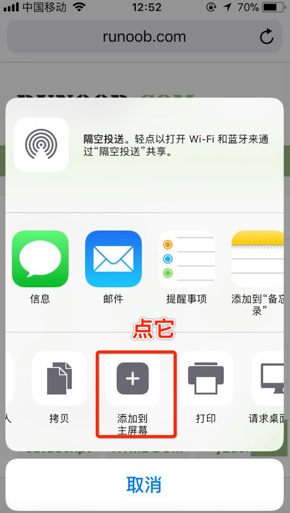

現在ユーザーから、市場に模倣版の「初心者向けチュートリアル」アプリが出回り、課金しているとの報告を受けています。こちらで説明させていただきます。当社は現在、各大手アプリストアにリリースしているアプリを開発しておらず、ましてや課金することもありません。皆様にはご注意いただき、正規のものを見分けていただきますようお願いいたします。
すでに購入された方は、返金説明をご参照ください：https://support.apple.com/zh-cn/HT204084
また、通報方法は以下のとおりです：
- 1. App Storeで一度購入を完了します（ダウンロードをタップし、進捗が表示されたらキャンセルするだけでOKです）；
- 2. アクセスhttps://reportaproblem.apple.com/、そのアプリを購入したApple IDでログインします；
- 3. 該当アプリの右側にある「Report a problem」をクリックします；
- 4. 通報理由を記入し、「Submit（送信）」を選択します。
また、直接メールを送信することもできます：appreview@apple.com、アプリのスクリーンショットを添付してください。
Android
Android テスト版：https://www.runoob.com/api/runoob.apk
QRコード：
2、iOS ホーム画面
iOSユーザーはSafariブラウザを使用して、私たちのアプリをホーム画面に保存できます。具体的な操作は次のとおりです。Safariブラウザで公式サイト https://www.runoob.com を開き、共有ボタンをタップします：

「ホーム画面に追加」をタップします：

タイトルを編集できます：

成功すると、画面は以下のように表示されます：